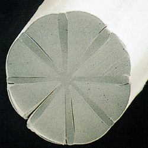
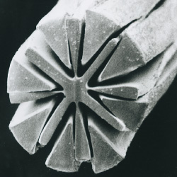
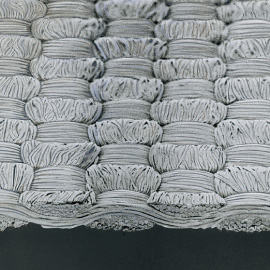
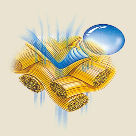

「ベルスプリット」はポリエステルとナイロンを複合したマイクロファイバー「ベリーマ®X」を使用し、独自の高収縮加工を施した超高収縮織物です。
特殊高密度加工のため雨や風を遮断し、汗や湿気を通しムレにくく快適な衣服内空間を演出する素材です。
ポリエステルとナイロンの特性を持ったマイクロファイバーをタテ・ヨコ共に使用し、超高収縮加工を施すことによって、独特のハリ・コシときめ細やかな風合いを表現。
「ベリーマX」を生んだ細繊度技術と複合紡糸技術に超高収縮加工技術を加えて、優れた透湿防水性と通気性を実現。

「ベリーマX」開繊前

「ベリーマX」開繊後


ブラウス、シャツ、裏地他
ＫＢセーレン株式会社
衣料資材販売部
kbs.info@kb.seiren.com